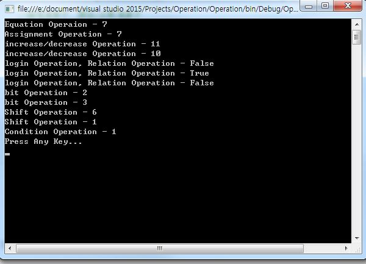
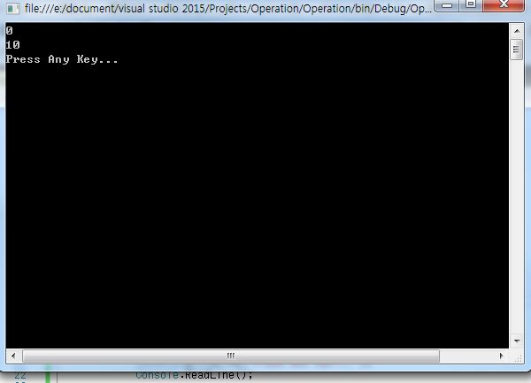

こんにちは。明月です。
今日はプログラムの演算子について勉強します。
プログラムは演算子が数学らしい数式の演算子があるし、その以外に論理演算子、条件演算子などもあります。
演算子に関することは下記の表と例を参考して詳しく説明します。
| 演算子タイプ | 演算子 | 例 |
|---|---|---|
| 数式演算子 | +, -, *, /, % | int a = (x + y - z) * (b / c) % d; |
| 割当演算子 | =, +=, -=, *=, /=, %= | int a = 100; sum += a; |
| 増加/減少演算子 | ++, -- | int i = 1; i++; |
| 論理演算子 | && (And), || (Or), ! (Not) | if ((a > 1 && b < 0) || c == 1 || !d) |
| 関係/比較演算子 | <, >, ==, !=, >=, <= | if (a <= b) |
| ビット演算子 | & (AND), | (OR), ^ (XOR) | byte a=7; byte b=(a & 3) | 4; |
| シフト演算子 | >>, << | int i=8; i = i << 5; |
| 条件演算子 | ? ?? (C# 3.0以上だけ) |
int val = (a > b) ? a : b; string s = str ?? "(null)"; |
using System;
using System.Collections.Generic;
using System.Linq;
using System.Text;
using System.Threading.Tasks;
namespace Operation
{
class Program
{
static void Main(string[] args)
{
//数式演算子
int a = (6 + 5 - 4) * (3 / 2) % 10;
Console.WriteLine("Equation Operaion - " + a);
//割当演算子
int b = 10;
b += a;
Console.WriteLine("Assignment Operation - " + a);
//増加/減少演算子
int c = 10;
c++;
Console.WriteLine("increase/decrease Operation - " + c);
c--;
Console.WriteLine("increase/decrease Operation - " + c);
//論理演算子、関係/比較演算子
bool d = a > 10 && b <= 10;
Console.WriteLine("login Operation, Relation Operation - " + d);
d = c != 10 || a < 10;
Console.WriteLine("login Operation, Relation Operation - " + d);
d = !d;
Console.WriteLine("login Operation, Relation Operation - " + d);
//ビット演算子
int e = 3 & 2; //0011 & 0010 = 0010
Console.WriteLine("bit Operation - " + e);
e = 3 | 2; //0011 | 0010 = 0010
Console.WriteLine("bit Operation - " + e);
//シフト演算子
int f = 3 << 1;//0011 << 1 = 0110
Console.WriteLine("Shift Operation - " + f);
f = 3 >> 1;//0010 >> 1 = 0001
Console.WriteLine("Shift Operation - " + f);
// 条件？真 : 偽
int g = 3 > 1 ? 1 : 2;
Console.WriteLine("Condition Operation - " + g);
Console.WriteLine("Press Any Key...");
Console.ReadLine();
}
}
}

C#は「Null-coalescing Operation」という演算子があります。記号は「??」の形で使います。
「Null-coalescing operation」は簡単にいうと「null」をチェックする演算子です。「??」の左の被演算子の値が「null」の場合に右の被演算子を返却するし、「null」ではない場合はそのままに左の被演算子を返却します。
下記の例を参考してください。
using System;
using System.Collections.Generic;
using System.Linq;
using System.Text;
using System.Threading.Tasks;
namespace Operation
{
class Program
{
static void Main(string[] args)
{
int? test = null;
//testの変数がnullなので0の値が返却する。
Console.WriteLine(test ?? 0);
//testの変数がnullなので「10」の値に更新される。
test = test ?? 10;
Console.WriteLine(test);
Console.WriteLine("Press Any Key...");
Console.ReadLine();
}
}
}

「Study / C#」の他投稿
- [C#] Thread(スレッド)2019/07/24 00:57:35
- [C#] 「IDisposable」と「using」2019/07/23 00:05:40
- [C#] ファイルシステム(File System) - FileStream、 Encoding、 Serializable2019/07/22 23:45:05
- [C#] ファイルシステム(File System) - FileInfo,DirectoryInfo2019/07/22 23:30:17
- [C#] MSDN(Microsoft Developer Network)2019/07/22 23:15:42
- [C#] Attribute(アトリビュート)2019/07/20 02:27:23
- [C#] Reflection(リフレクション)2019/07/20 02:22:03
- [C#] Objectタイプ、varタイプ(匿名タイプ)、dynamicタイプ2019/07/18 22:50:16
- [C#] Partial Type(クラス分割)、拡張メソッド2019/07/18 20:22:16
- [C#] Lamda(ラムダ)2019/07/17 23:06:42
- [C#] LINQ(リンク)-3 (Enumerableクラス)2019/07/17 20:57:00
- [C#] LINQ(リンク)-2 (メソッド式)2019/07/16 22:40:03
- [C#] LINQ(リンク)-12019/07/16 20:41:27
- [C#] event(イベント)2019/07/16 00:59:34
- [C#] delegate(デリゲート)2019/07/16 00:48:03
最新投稿
- [PHP] namespaceとuse2020/02/13 03:00:00
- [CakePHP] RequestとResponseに関して2020/02/12 03:00:02
- [CakePHP] PHPのCakeからAjax要請がある時、jsonタイプ(json_encode関数)でResponseする方法とControllerでViewを選択する方法2020/02/08 03:00:00
- [CakePHP] MVCフレームワークのCakeをインストールする方法2020/02/07 03:00:02
- [PHP] 自動require及びincludeをする方法(spl_autoload_register)2020/02/05 03:00:00
- [PHP] 匿名関数(ラムダ式)とクロージャ(closure)2020/02/04 03:00:00
- [PHP] PHPのコーディング領域とデザイン領域を分離するテンプレートライブラリ Smarty2020/02/02 03:00:00
- [PHP] Reflection - Variable編2020/02/01 03:00:00
- [PHP] Reflection - Method編2020/01/31 03:00:00
- [PHP] Reflection - Class編2020/01/30 03:00:00
- [PHP] エラーページ処理方法(追加: ob_cleanとdie関数使用方法)2020/01/29 03:00:00
- [PHP] 分散設定ファイル(.htaccess) 使用方法2020/01/28 03:00:00
- [PHP] データベース(mariaDB)を連結して使う方法2020/01/24 03:00:00
- [PHP] IOに関して2020/01/23 03:00:00
- [PHP] requireとinclude、そして「@」の使用方法2020/01/22 03:00:00